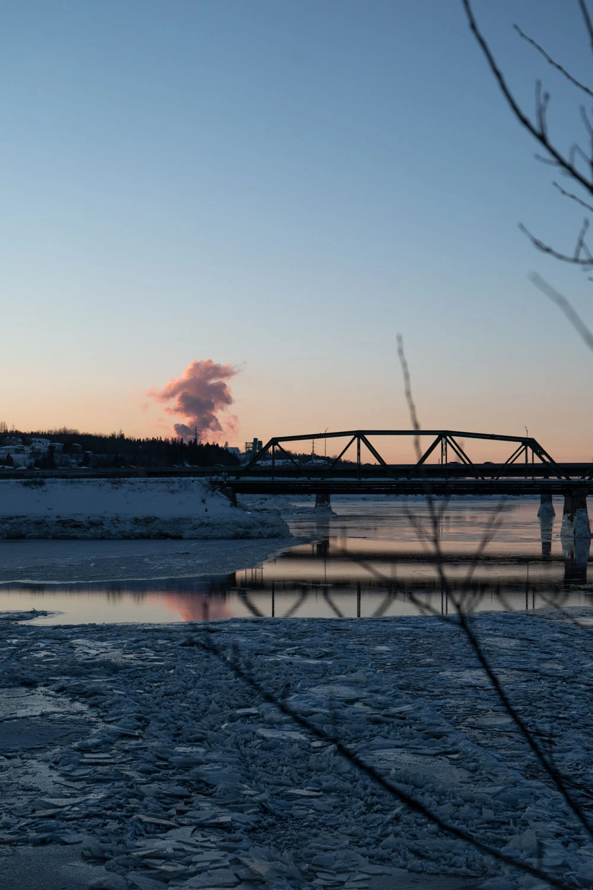
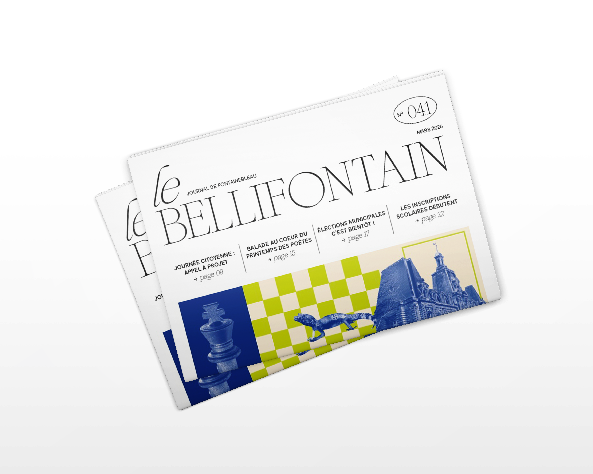

<!doctype html>
<html lang="fr"></html>
  <head>
    <meta charset="UTF-8" />
    <meta name="viewport" content="width=device-width, initial-scale=1.0" />
    <title>Portfolio 2026</title>
    <link rel="stylesheet" href="style.css" />
    <script src="script.js" defer></script>
    <meta name="description" content="Portfolio d'Élise Céladon. Direction artistique, identité visuelle et design graphique à travers une sélection de projets créatifs et de réalisations.">
  <link rel="icon" type="image/png" href="./img/favicon.png">


</head>
  

<body>

   

<header class="header">

    <div class="logo">
        <span class="logo-circle"></span>
        <span class="logo-name">Elise CELADON</span>
    </div>

    <button class="menu-btn" aria-label="Ouvrir le menu">
        <span></span>
        <span></span>
        <span></span>
    </button>

    <nav class="menu">
        <a href="#">Accueil</a>
        <a href="#">À propos</a>
        <a href="#">Projets</a>
        <a href="#">Contact</a>
    </nav>

</header>


    <main>
        <section class="hero">

            

            <div class="overlay"></div>

            <div class="hero-content">

                <p class="intro">Mon portfolio</p>

                <div class="ellipse"></div>

                <h1 class="hero-title">
                    ELISE<br>
                    CELADON
                </h1>

                <p class="job">
                    Directrice artistique
                </p>

            </div>

            <p class="photo-note">
                *Une de mes photographies du pont 
de Chicoutimi prise au Canada
            </p>

            
        </section>
    </main>


<!-- section de mes projets -->
    

   <section class="projects">

  
    <div class="projects-top">

        <div class="projects-heading">

            <p class="projects-subtitle">
                SÉLECTION DE MES
            </p>

            <h2 class="projects-title">
                PROJETS
            </h2>

        </div>

        <div class="projects-text">

            <p>
                Une sélection de mes projets de design graphique et de réalisation documentaire. 
            </p>

        </div>

    </div>

    <!-- Projet 01 -->
   <article class="project">

    <div class="project-number">
        <span>01</span>
    </div>

    <div class="project-image project-image-first">
        
         
    </div>

      <div class="project-info">

            <h3>
               LE BELLI'
            </h3>

            <p>
                Magazine municipal<br>
                Direction artistique, design éditorial
            </p>

            <div class="project-year">
                2026
            </div>

           <a href="projet1.html">
    VOIR LE PROJET
</a>

</article>

    <!-- Projet 02 -->
    <article class="project">

        <div class="project-number">
            <span>02</span>
        </div>

        <div class="project-image">
            
        </div>

        <div class="project-info">

            <h3>
               IDENTITÉ VISUELLE CCPN
            </h3>

            <p>
                Creéation de l'identité visuuelle de la Communauté de Communes du Pays de Nemours.
            </p>

            <div class="project-year">
                2024
            </div>

            <a href="#">
                VOIR LE PROJET
            </a>

        </div>

    </article>

    


    <!-- Projet 03 -->
    <article class="project">

        <div class="project-number">
            <span>03</span>
        </div>

        <div class="project-image">
            
        </div>

        <div class="project-info">

            <h3>
                DOCU <br>
               EN CORÉE DU SUD
            </h3>

            <p>
                Réalisation du documentaire "Receuil" sur la camppagne en corée du sud
            </p>

            <div class="project-year">
                2026
            </div>

            <a href="#">
                VOIR LE PROJET 
            </a>

        </div>

    </article>

</section>


<footer class="footer">

    <p>
       © 2026 Elise Céladon. Tous droits réservés.
    </p>

    <div class="footer-links">
        <a href="#">Mentions légales</a>
        <a href="mailto:contact@email.fr">Contact</a>
    </div>

</footer>
    
</body>


  
</html>
